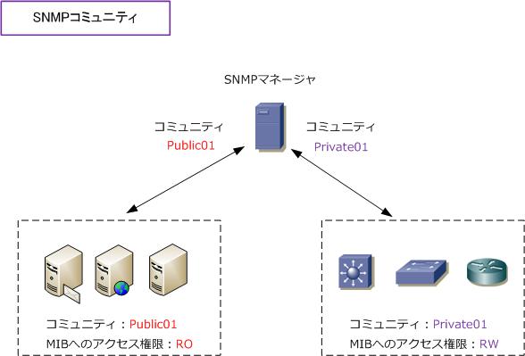

SNMP - community / version
SNMPコミュニティとは
SNMPコミュニティとは、SNMPで管理するネットワークシステムの範囲のことです。SNMPマネージャと SNMPエージェントとの間で、同じコミュニティ名にすることで情報を共有することができます。監視対象 ごとに異なるコミュニティ名を設定することにより、効率的な管理とアクセス権限の分離を実現できます。

上図の通り、コミュニティごとにMIBへのアクセス権限を分けることができます。MIBへのアクセス権限は RO、RW、Read-write-all の3種類があります。MIBへの書き込み（RW）できるということは、たとえば SNMPマネージャがSNMPエージェントであるルータを強制的に再起動（MIBへ書込）できるようになります。
| MIBへのアクセス権限 | 説明 |
|---|---|
| RO | Read-only。MIB情報の読み取りが可能 |
| RW | Read-write。MIB情報の読み書きが可能 |
| Read-write-all | コミュニティを含めてMIB情報の読み書きが可能 |
SNMPのバージョン
SNMPのバージョンには、正確には「SNMPv1、SNMPv2、SNMPv2c、SNMPv3」の4つのバージョンが あります。しかし「SNMPv2」は、ほぼ使用されることなく「SNMPv2c」へ移行したことから、多くの ネットワーク製品でサポートしているSNMPバージョンは「SNMPv1、SNMPv2c、SNMPv3」の3つです。 その他のメーカーと同様、シスコ機器も「SNMPv1、SNMPv2c、SNMPv3」の3つをサポートしています。
| SNMPバージョン | RFC | 説明 |
|---|---|---|
| SNMPv1 | RFC 1157 | SNMPコミュニティによる平文認証。SNMPトラップにおける再送確認なし。 |
| SNMPv2c | RFC 1901 | SNMPコミュニティによる平文認証。SNMPトラップにおける再送確認あり。 |
| SNMPv3 | RFC 2273～5 | ユーザ単位の暗号化されたパスワード認証。SNMPトラップにおける再送確認あり。 |
SNMPv1、SNMPv2c、SNMPv3の違いは上記の通りです。推奨はv3ですが、v2cが広く使用されています。 SNMPv1とSNMPv2cに互換性があることもあり、現在でもSNMPv1が使用されている環境も多くあります。 SNMPv1で使用されるSNMPメッセージには以下の5つがあります。
| SNMPメッセージ | 送信側 | 意味 |
|---|---|---|
| Get Request | SNMPマネージャ | SNMPエージェントから得たい情報を、OIDを指定して要求 |
| GetNext Request | SNMPマネージャ | 直前に指定したOIDの次のOIDを指定して要求。 |
| Set Request | SNMPマネージャ | SNMPエージェントの設定変更を行いたい場合、OIDを指定して要求 |
| Get Response | SNMPエージェント | SNMPマネージャから要求されたOIDに対して、値を挿入して返信 |
| TRAP | SNMPエージェント | SNMPエージェントが機器の状態に変化があった場合、自発的に送信 |
SNMPv2で使用されるSNMPメッセージは、上記の5つだけでなく、以下の2つも追加されています。
| SNMPメッセージ | 送信側 | 意味 |
|---|---|---|
| GetBulk Request | SNMPマネージャ | 一括参照要求と言われるように、高速に複数の管理情報を取得。 |
| Inform Request | SNMPエージェント | SNMPエージェントからマネージャへ通知する時に確認応答も要求。 |
SNMPv3では、SNMPv2と同じように上記の 7 つのSNMPメッセージを使用することができます。そして、 SNMPv3では、コミュニティ名ではなくUSM（User-based Security-Model）と呼ばれる、ユーザごとの パスワード認証機能と、VACM（View-based Access Control Model）と呼ばれる、ユーザごとにアクセス 可能なMIBの範囲を定義できる機能が備わっています。
SNMPv3のUSMにおけるユーザ認証には以下の3つのセキュリティレベルがあります。セキュリティレベルの 用語はメーカによって異なります。以下の表は、Cisco機器におけるセキュリティレベルの説明となります。
| セキュリティレベル | 認証 | 暗号化 | 結果 |
|---|---|---|---|
| noAuthNoPriv | ユーザ名 | なし | ユーザ名だけを使用して認証。暗号化なし |
| authNoPriv | MD5 or SHA | なし | HMAC-MD5 or HMAC-SHAを使用して認証。暗号化なし |
| authPriv | MD5 or SHA | DES or AES | HMAC-MD5 or HMAC-SHAを使用して認証。※1で暗号化 |
※1 次の暗号化レベルを指定可能 ⇒ 「CBC-DES」「3DES」「AES128」「AES192」「AES256」
SNMPv3を使用する場合、SNMPマネージャとエージェントの両方がSNMPv3に対応している必要があります。